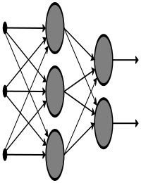
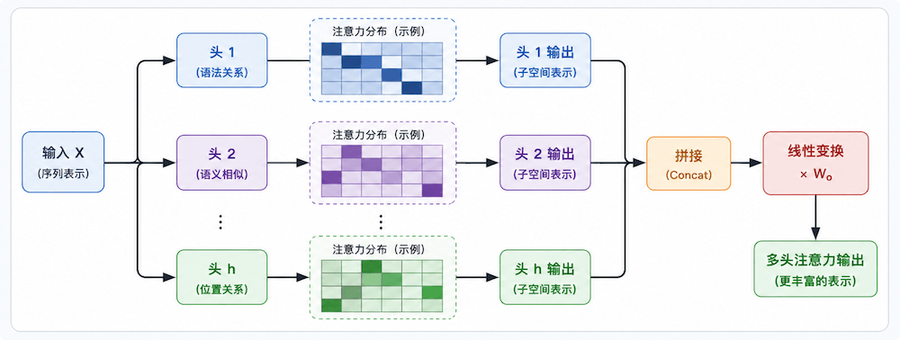

Transformer 模型
Transformer 是一种基于注意力机制的深度学习模型，最初由 Vaswani 等人在 2017 年的论文《Attention is All You Need》中提出。
它彻底改变了自然语言处理（NLP）领域，并逐渐扩展到计算机视觉等几乎所有 AI 方向。
Transformer 的核心思想是完全放弃传统的逐词处理方式（RNN），改用注意力机制让模型一次性看完整个句子，同时判断每个词与其他词的关系，从而实现更快的训练和更强的理解能力。
为什么需要 Transformer？
在 Transformer 出现之前，NLP 领域主要依赖 RNN（循环神经网络）系列模型（如 LSTM、GRU），它们按顺序处理文本，存在两个关键缺陷。
RNN 的局限性
RNN 像人类"逐字阅读"一样处理文本，这带来了以下问题：
- 梯度消失：处理长文本时，模型会"忘记"较早的信息。例如"我昨天在图书馆借了一本关于量子物理的书"中，读到"书"时早已忘记"我"是主语，长距离依赖极难捕捉。
- 无法并行：RNN 必须按顺序处理每一个词，无法利用 GPU 的并行计算能力，训练超长文本时速度极慢。
Transformer 的解决方案
通过自注意力机制，模型同时处理所有词，并动态计算每对词之间的关联强度，彻底解决了上述两个问题。
RNN 顺序处理 vs Transformer 并行 + 全局注意力对比
Transformer 整体架构
Transformer 由编码器（Encoder）和解码器（Decoder）两大部分组成，各自由多层相同模块堆叠而成。
类比理解：编码器好比"读书人"，把输入的中文句子理解为一组富含语义的向量；解码器好比"翻译官"，参考这些向量，一个词一个词地生成英文输出。
以下是 Transformer 架构图，左边为编码器，右边为解码器。

Transformer 编码器 + 解码器完整架构（橙色箭头为 Cross-Attention 信息流）
Transformer 模型由 编码器（Encoder） 和 解码器（Decoder） 两部分组成，每部分都由多层堆叠的相同模块构成。

编码器（Encoder）
编码器由 NN 层相同的模块堆叠而成，每层包含两个子层：
- 多头自注意力机制（Multi-Head Self-Attention）：计算输入序列中每个词与其他词的相关性。
- 前馈神经网络（Feed-Forward Neural Network）：对每个词进行独立的非线性变换。
每个子层后面都接有 残差连接（Residual Connection） 和 层归一化（Layer Normalization）。
解码器（Decoder）
解码器也由 NN 层相同的模块堆叠而成，每层包含三个子层：
- 掩码多头自注意力机制（Masked Multi-Head Self-Attention）：计算输出序列中每个词与前面词的相关性（使用掩码防止未来信息泄露）。
- 编码器-解码器注意力机制（Encoder-Decoder Attention）：计算输出序列与输入序列的相关性。
- 前馈神经网络（Feed-Forward Neural Network）：对每个词进行独立的非线性变换。
同样，每个子层后面都接有残差连接和层归一化。
在 Transformer 模型出现之前，NLP 领域的主流模型是基于 RNN 的架构，如长短期记忆网络（LSTM）和门控循环单元（GRU）。这些模型通过顺序处理输入数据来捕捉序列中的依赖关系，但存在以下问题：
梯度消失问题：长距离依赖关系难以捕捉。
顺序计算的局限性：无法充分利用现代硬件的并行计算能力，训练效率低下。

Transformer 通过引入自注意力机制解决了这些问题，允许模型同时处理整个输入序列，并动态地为序列中的每个位置分配不同的权重。
核心：自注意力机制
自注意力机制是 Transformer 最重要的组件，它回答一个问题："处理这个词时，我应该重点关注句子中的哪些其他词？"
Q、K、V 是什么？
每个词的向量会被线性变换成三个角色：Query（查询）、Key（键）、Value（值）。
Q、K、V 的来源与注意力计算流程
用搜索引擎类比理解 Q/K/V：
Q（Query）= 你在搜索框里输入的关键词，代表"我要查什么？"
K（Key）= 每个网页的标题标签，代表"我能匹配哪些词？"
V（Value）= 每个网页的实际内容，代表"我能提供什么信息？"
注意力权重 = Q 与每个 K 的相似度，最终结果 = 用权重对所有 V 加权求和。
注意力公式
\[ \text{Attention}(Q, K, V) = \text{softmax}\left(\frac{QK^T}{\sqrt{d_k}}\right)V \]
其中：
- \(Q\) 是查询矩阵，\(K\) 是键矩阵，\(V\) 是值矩阵。
- \(d_k\) 是向量的维度，用于缩放点积，防止梯度爆炸。
- softmax 将原始得分转为 0~1 之间的概率分布（权重之和为 1）
多头注意力（Multi-Head Attention）
单一注意力视角有限，就像只用一种角度看问题。
多头注意力将输入分成 h 个子空间，每个"头"独立学习不同的关注模式，最后拼接结果。

位置编码（Positional Encoding）
Transformer 同时处理所有词，天然没有"顺序感"——"猫吃鱼"和"鱼吃猫"会被当成一样的。
位置编码就是给每个词加上"座位号"，告诉模型各词在句子中的位置。
由于 Transformer 没有显式的序列信息（如 RNN 中的时间步），位置编码被用来为输入序列中的每个词添加位置信息。通常使用正弦和余弦函数生成位置编码：类比：就像考试时在试卷上标"第1题、第2题"，位置编码让 Transformer 知道"我"是第1个词，"爱"是第2个词。
\[ PE_{(pos, 2i)} = \sin\left(\frac{pos}{10000^{2i/d_{\text{model}}}}\right) \] \[ PE_{(pos, 2i+1)} = \cos\left(\frac{pos}{10000^{2i/d_{\text{model}}}}\right) \]
其中：
\(pos\) 是词的位置，\(i\) 是维度索引。
位置编码与词嵌入相加，给模型注入位置信息
编码器-解码器架构
Transformer 模型由编码器和解码器两部分组成：
- 编码器：将输入序列转换为一系列隐藏表示。每个编码器层包含一个自注意力机制和一个前馈神经网络。
- 解码器： 根据编码器的输出生成目标序列。每个解码器层包含两个注意力机制（自注意力和编码器-解码器注意力）和一个前馈神经网络。
残差连接与层归一化
每个子层（自注意力、前馈网络）输出后，会执行残差连接和层归一化两个操作，帮助深层网络稳定训练。
残差连接让梯度"短路"流过，层归一化稳定训练
- 残差连接：将子层的输入直接加到输出上（output = F(x) + x），避免深层网络的梯度消失，也让模型可以"选择性忽略"某层的变换。
- 层归一化：对每层的激活值做归一化，使训练更稳定，收敛更快。
Transformer 的优势
相比传统的 RNN 架构，Transformer 有以下几个显著优势：
并行计算
同时处理整个序列，充分利用 GPU 并行能力，训练速度远超 RNN。
长距离依赖
自注意力机制让任意两个词之间的"通信距离"始终为 1，不再受序列长度限制。
可扩展性强
堆叠更多层、增大维度即可提升性能，催生了 BERT、GPT 等强大模型。
Transformer 的应用
Transformer 架构已在 AI 各领域得到广泛应用，以下按领域分类介绍。
自然语言处理（NLP）
计算机视觉（CV）
多模态任务
Transformer 的应用
自然语言处理（NLP）：
机器翻译（如 Google Translate）
文本生成（如 GPT 系列模型）
文本分类、问答系统等。
计算机视觉（CV）：
图像分类（如 Vision Transformer）
目标检测、图像生成等。
多模态任务：
结合文本和图像的任务（如 CLIP、DALL-E）。
PyTorch 实现示例
以下是一个完整的 PyTorch Transformer 示例，包含详细注释帮助初学者理解每个步骤：
实例
import torch.nn as nn
import torch.optim as optim
# --- 定义 Transformer 模型 ---
class TransformerModel(nn.Module):
def __init__(self, input_dim, model_dim, num_heads, num_layers, output_dim):
super(TransformerModel, self).__init__()
# 词嵌入：将词索引映射为 model_dim 维向量
self.embedding = nn.Embedding(input_dim, model_dim)
# 位置编码：可学习的位置向量，最大支持长度 1000
self.positional_encoding = nn.Parameter(
torch.zeros(1, 1000, model_dim)
)
# PyTorch 内置 Transformer（包含编码器 + 解码器）
self.transformer = nn.Transformer(
d_model=model_dim, # 向量维度
nhead=num_heads, # 多头注意力的头数
num_encoder_layers=num_layers, # 编码器层数
num_decoder_layers=num_layers # 解码器层数
)
# 最终线性层：将向量映射回词汇表大小（用于预测下一个词）
self.fc = nn.Linear(model_dim, output_dim)
def forward(self, src, tgt):
src_seq_length = src.size(1)
tgt_seq_length = tgt.size(1)
# 词嵌入 + 位置编码（两者相加）
src = self.embedding(src) + self.positional_encoding[:, :src_seq_length, :]
tgt = self.embedding(tgt) + self.positional_encoding[:, :tgt_seq_length, :]
# 通过 Transformer（编码器读 src，解码器生成 tgt）
transformer_output = self.transformer(src, tgt)
# 线性层输出每个位置的词汇概率
output = self.fc(transformer_output)
return output
# --- 超参数设置 ---
input_dim = 10000 # 词汇表大小（共有多少个不同的词）
model_dim = 512 # 每个词的向量维度（原论文使用 512）
num_heads = 8 # 多头注意力头数（需能整除 model_dim）
num_layers = 6 # 编码器/解码器层数（原论文使用 6）
output_dim = 10000 # 输出维度（与词汇表大小相同）
# --- 初始化模型、损失函数和优化器 ---
model = TransformerModel(input_dim, model_dim, num_heads, num_layers, output_dim)
criterion = nn.CrossEntropyLoss() # 多分类交叉熵损失
optimizer = optim.Adam(model.parameters(), lr=0.001) # Adam 优化器
# --- 构造示例数据（实际使用时换成真实语料） ---
# src: 源序列（如中文），shape = (序列长度=10, 批量大小=32)
src = torch.randint(0, input_dim, (10, 32))
# tgt: 目标序列（如英文），shape = (序列长度=20, 批量大小=32)
tgt = torch.randint(0, input_dim, (20, 32))
# --- 前向传播 ---
output = model(src, tgt)
# output.shape = (20, 32, 10000)：每个位置对词汇表的预测分布
# --- 计算损失 ---
# view(-1, output_dim) 将 (20,32,10000) 展平为 (640, 10000)
loss = criterion(output.view(-1, output_dim), tgt.view(-1))
# --- 反向传播 + 更新权重 ---
optimizer.zero_grad() # 清空上一步的梯度
loss.backward() # 计算梯度
optimizer.step() # 更新参数
print(f"损失值: {loss.item():.4f}")
上面的代码使用随机数据只是为了演示流程。实际训练时需要：
- 1) 准备真实的平行语料（如中英翻译对）；
- 2) 做好分词和词汇表构建；
- 3) 实现 Decoder 的逐步推理（自回归生成）；
- 4) 调整学习率调度策略（原论文用 Warmup）。
总结
从 RNN 到 Transformer 的演进，代表了深度学习领域一次重要的范式转变。
从 RNN 到 Transformer 的演进路径
Transformer 的三大创新彻底改变了深度学习格局：
- 自注意力机制——让任意两词直接"对话"，告别梯度消失。
- 完全并行化——训练速度质的飞跃，使大规模预训练成为可能。
- 通用架构——从 NLP 到 CV、多模态，Transformer 已成为 AI 时代的"通用积木"。
掌握 Transformer，你就掌握了理解 GPT、BERT、Stable Diffusion 等现代 AI 模型的钥匙。
相关术语速查
| 术语 | 英文 | 说明 |
|---|---|---|
| 自注意力 | Self-Attention | 计算序列内各元素之间相关性的机制 |
| 多头注意力 | Multi-Head Attention | 多个注意力头并行计算，捕捉不同特征子空间的信息 |
| 位置编码 | Positional Encoding | 为模型提供序列中元素位置信息的技术 |
| 残差连接 | Residual Connection | 将输入直接加到子层输出上，缓解梯度消失 |
| 层归一化 | Layer Normalization | 对每层激活值归一化，加速训练收敛 |
| 编码器 | Encoder | 将输入序列编码为上下文表示 |
| 解码器 | Decoder | 根据编码器输出生成目标序列 |
| 交叉注意力 | Cross-Attention | 解码器关注编码器输出的注意力机制 |
| 掩码注意力 | Masked Attention | 解码器中防止关注未来位置信息的机制 |
| 前馈网络 | Feed-Forward Network | 对每个位置独立应用的全连接层 |

点我分享笔记